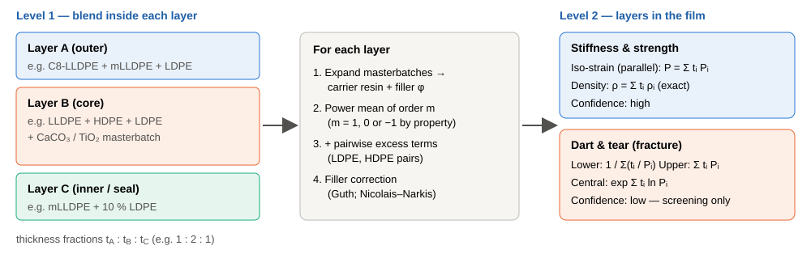
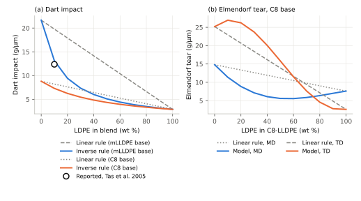
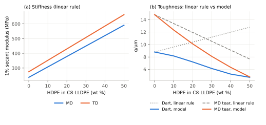
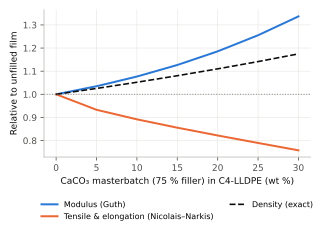
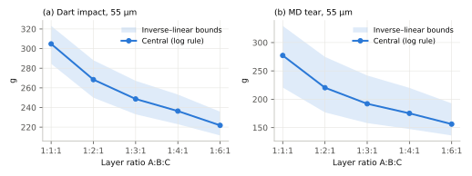
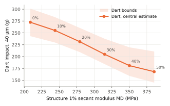
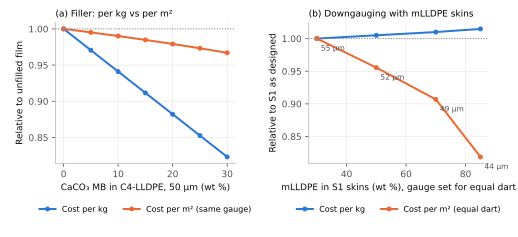
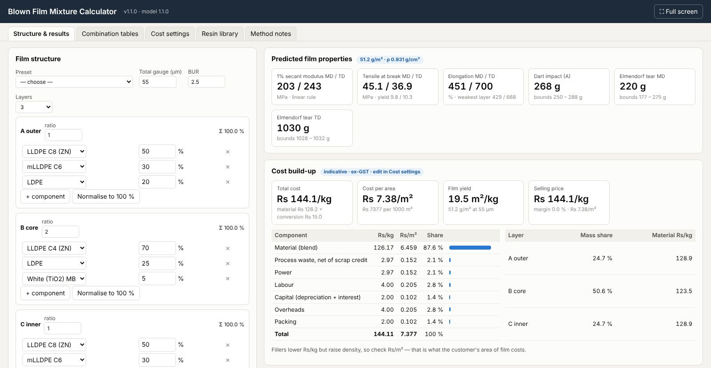

Abstract
Blown film converters set the stiffness, strength and toughness of polyethylene (PE) films by blending resins in each layer and by choosing the thickness ratio of coextruded layers. This paper builds a two-level method of mixtures for such films. At the first level, the properties of a blended layer are found from the properties of its resins: a linear (Voigt) rule for stiffness and strength, an inverse (Reuss) rule for dart impact, and pairwise excess terms for tear. Filler corrections are added for masterbatches. At the second level, layers are combined by thickness fraction. Stiffness and strength combine under iso-strain, while dart and tear are given as bounds. The end-member data are typical published values for one LDPE, three Ziegler–Natta LLDPEs (butene, hexene, octene), one metallocene LLDPE and one high-molecular-weight HDPE. The method reproduces a reported dart drop for a metallocene LLDPE with 10 % LDPE (observed ratio 0.57, model 0.61, linear rule 0.91). It is then applied to three worked three-layer structures. A cost model is added, using indicative Indian resin and masterbatch prices and the usual conversion components: power, labour, capital, overheads, packing and process waste. It shows that cost per square metre, not per kilogram, is the right measure: 30 % CaCO₃ masterbatch cuts cost per kilogram by 18 % but cost per square metre by only 3 % at the same gauge, while metallocene-rich skins raise cost per kilogram slightly yet allow an 18 % lower cost per square metre at equal predicted dart. A dedicated section explains why the method of mixtures fails for fracture properties. Toughness is controlled by tie-chain density, frozen-in orientation, separate crystal populations, filler dispersion and crack initiation in the weakest layer, not by composition alone. The method is therefore best used to screen and rank formulations, then confirmed on the line. A companion offline calculator generates property and cost tables for any combination of resins, additives and layer ratios.
Keywords: blown film; coextrusion; LDPE; LLDPE; metallocene polyethylene; HDPE; rule of mixtures; Voigt–Reuss bounds; dart impact; Elmendorf tear; calcium carbonate masterbatch; film cost; conversion cost
1. Introduction
Most flexible packaging is made by blown film extrusion. Molten polyethylene is pushed through an annular die, inflated into a bubble, drawn upward and cooled. The film that results is never a single resin. A sealant web for lamination may combine octene LLDPE with 10–50 % LDPE [7]. A milk-pouch film combines LLDPE, LDPE and a white masterbatch. A heavy-duty sack adds HDPE for stiffness and a mineral filler for cost. On a three-layer line, each extruder feeds its own blend, and the layer ratio becomes a further design variable.
Converters need a quick way to estimate what a new formulation will do before running it. The natural first tool is the method of mixtures (rule of mixtures): weight each component's property by its share and add. It costs nothing, needs only datasheets, and is often taught as if it were generally valid. For polyethylene films it is partly right and partly very wrong. Stiffness behaves almost additively. Dart impact and tear often do not, and the errors are large enough to mislead a formulation decision.
This paper has three aims:
- to set out a two-level method of mixtures for up to three coextruded layers, each a blend of LDPE, LLDPE (C4, C6, C8), mLLDPE, HDPE and additive masterbatches;
- to show, with literature data, where the simple linear rule breaks down and why, and how the model must be modified (inverse rule, excess terms, bounds) to follow the reported trends;
- to add the typical cost components of a blown film, so that property changes can be weighed against cost per kilogram and per square metre;
- to provide worked examples and an offline calculator that generates tables for different combinations, so the method can be used for screening.
The paper deals with mechanical properties only: 1 % secant modulus, tensile yield and break strength, elongation at break, dart impact (ASTM D1709 method A) and Elmendorf tear (ASTM D1922) [20]. Optical, barrier and sealing properties are mentioned only where layer placement matters.
2. Materials: resins, additives and the data used
2.1 Resin classes
LDPE is made by high-pressure free-radical polymerisation and carries long-chain branches. These give it high melt strength and good bubble stability, but a low concentration of tie chains between crystal lamellae, so its films are relatively weak in dart, tear and puncture [8].
Ziegler–Natta LLDPE (ZN-LLDPE) is a linear copolymer of ethylene with butene (C4), hexene (C6) or octene (C8). Short branches control density, and the longer comonomers give more tie chains and higher toughness, roughly in the order C4 < C6 ≈ C8. Its melt strength is low, which is why LDPE is usually blended in.
Metallocene LLDPE (mLLDPE) has a narrow molecular-weight and comonomer distribution. It gives very high dart impact and puncture and good hot tack, but a modest MD tear and low melt strength.
HMW-HDPE has density about 0.95 g/cm³ and very few branches. It is run at high blow-up ratio (BUR) with a long neck (“high stalk”), and gives stiff, strong, thin films with very low MD tear. In coextrusions it is used in the core to add stiffness.
2.2 Additive masterbatches
Additives are dosed as masterbatches (MB): a concentrate of the active ingredient in a PE carrier. The model treats the carrier as an ordinary resin and the active ingredient either as a filler (enters the volume fraction φ) or as inert (dilution only):
- CaCO₃ filler MB — 75 % coated calcium carbonate (ρ 2.71 g/cm³) in C4-LLDPE; used for cost, output and stiffness;
- white MB — 60 % rutile TiO₂ (ρ ≈ 4.2 g/cm³) in LDPE; used for opacity;
- antiblock MB — 20 % silica (ρ ≈ 2.2 g/cm³) in LDPE; usual dosage 1–3 %;
- slip MB — 5 % erucamide in LDPE; and processing-aid (PPA) MB — about 3 % active in LLDPE. At normal dosages these have no measurable effect on bulk mechanical properties and are treated as inert.
2.3 End-member data
Table 1 lists the end-member values. Each is a typical value from a published datasheet of a widely used grade, chosen because the sheet reports a full set of film properties with the film gauge and processing conditions. The values are typical, not specifications. Dart and tear are divided by the datasheet gauge and given in g/µm (multiply by 25.4 for g/mil). Two points about the data matter for everything that follows:
- the LDPE and LLDPE data come from films blown at BUR 2.5 on small lines at 25–38 µm, but the HDPE data come from a 20 µm film at BUR 4 with a long neck — very different conditions;
- suppliers do not all use the same secant definition: the Dow sheet lists 1 % and 2 % secant, the LyondellBasell sheet gives an unspecified secant modulus. These are treated as comparable for illustration.
Table 1. End-member film properties used in this paper (typical datasheet values; dart and tear normalised by datasheet gauge).
| Class | Representative grade | ρ (g/cm³) | Gauge (µm) | BUR | E1% MD/TD (MPa) | σy MD/TD (MPa) | σb MD/TD (MPa) | εb MD/TD (%) | Dart (g/µm) | Tear MD/TD (g/µm) | Ref. |
|---|---|---|---|---|---|---|---|---|---|---|---|
| LDPE | ExxonMobil LD 100.BW (MI 2.0, 0.923) | 0.923 | 38.1 | 2.5 | 200/260 | 10.0/11.0 | 30.0/23.0 | 240/550 | 2.89 | 7.61/2.62 | [1] |
| LLDPE C4 (ZN) | ExxonMobil C4LL 1018 (MI 1.0, 0.918) | 0.918 | 25.4 | 2.5 | 190/230 | 9.6/10.0 | 50.0/36.0 | 570/870 | 3.54 | 3.54/17.72 | [2] |
| LLDPE C6 (ZN) | ExxonMobil LL 3001.63 (MI 1.0, 0.917 nominal) | 0.917 | 25.4 | 2.5 | 197/238 | 9.3/10.0 | 57.9/48.1 | 500/840 | 5.51 | 17.32/29.13 | [3] |
| LLDPE C8 (ZN) | Dow DOWLEX 2045G (MI 1.0, 0.920) | 0.920 | 25 | 2.5 | 237/275 | 11.3/11.9 | 47.4/40.6 | 600/740 | 8.80 | 14.80/25.20 | [4] |
| mLLDPE C6 | ExxonMobil Exceed m 1018 (MI 1.0, 0.918) | 0.918 | 25.4 | 2.5 | 170/180 | 8.7/8.8 | 60.0/60.0 | 500/640 | 21.65 | 8.66/14.57 | [5] |
| HMW-HDPE | LyondellBasell Alathon L5005 (MI 0.06, 0.949) | 0.949 | 20.3 | 4 | 945/1050 | 34.5/29.0 | 84.1/57.2 | 320/390 | 16.75 | 0.54/3.74 | [6] |
E1% = 1 % secant modulus; σy = tensile yield; σb = tensile strength at break; εb = elongation at break. C6-LLDPE density 0.917 g/cm³ is the nominal value for the series; LL 3001.63 gauge is taken as the supplier's standard 25.4 µm.
3. The two-level method of mixtures

3.1 Level 1: the blend inside a layer
Let a layer contain resins i = 1…n with polymer weight fractions wi (after masterbatch carriers are added in and the active ingredients removed). Three classical rules bracket the possible behaviour of a property P:
Linear (Voigt, parallel): P = Σ wi Pi (1)
Inverse (Reuss, series): 1/P = Σ wi / Pi (2)
Logarithmic (Lichtenecker): ln P = Σ wi ln Pi (3)
Equation (1) is exact when every phase carries the same strain, and (2) when every phase carries the same stress [18]. All three are special cases of the weighted power mean of order m:
Mm = ( Σ wi Pim )1/m, m = 1 → (1), m = −1 → (2), m → 0 → (3) (4)
The exponent describes how the phases share the load. A property dominated by the continuous, load-sharing structure follows m ≈ 1. A property controlled by the weakest link, where failure starts in the poorest region, behaves more like m ≈ −1. The defaults used here are m = 1 for modulus, yield and break strength and tear; m = 0 for elongation; and m = −1 for dart impact. The basis for the dart choice is given in Section 5.1.
Some resin pairs show behaviour that no power mean can produce: a maximum or minimum outside the range of the two end members. These are handled with a Redlich–Kister excess term [19] between resin families A and B (ZN-LLDPE, mLLDPE, LDPE, HDPE):
ΔPAB = wA wB · ½(PA + PB) · [a0 + a1(wA − wB) + a2(wA − wB)2] (5)
The term vanishes for pure components. Scaling by the mean pair value keeps a0, a1 and a2 dimensionless, so one set applies to any grades in the same families. The layer value is Player = Mm + Σ ΔPAB. Table 2 lists the coefficients. They are illustrative: they were chosen to reproduce the trend shapes reported for LDPE/LLDPE blends [7, 8] and the stiffness–toughness trade-off reported for LLDPE/HDPE blends [10, 11]. They were not fitted to one data set, and should be refitted to the user's own blends.
Table 2. Default pairwise excess coefficients (all others zero).
| Pair A–B | Property | a0 | a1 | a2 | Trend it represents |
|---|---|---|---|---|---|
| ZN-LLDPE–LDPE and mLLDPE–LDPE | Tear MD | −2.00 | −0.85 | 0 | MD tear falls quickly, levels off at 40–80 % LDPE, then rises to the LDPE value [7] |
| ZN-LLDPE–LDPE and mLLDPE–LDPE | Tear TD | 0.55 | 3.03 | 0.34 | CD tear maximum at low LDPE, then a steady fall [7] |
| ZN-LLDPE–HDPE | Dart | −2.13 | 1.50 | 0 | Dart falls as HDPE rises, despite the high datasheet dart of HMW-HDPE [10, 11] |
| ZN-LLDPE–HDPE | Tear MD | −1.50 | 0 | 0 | MD tear is lost faster than the linear rule [10] |
| mLLDPE–HDPE | Dart, tear MD | half of ZN values | Metallocene matrices keep more of their toughness with HDPE [22] | ||
| LDPE–HDPE | Dart, tear MD | −1.00 | 0 | 0 | Assumed; little published film data |
3.2 Density and fillers
Density is the one property for which a mixture rule is exact, because specific volumes add (no volume change on mixing PE melts that crystallise separately is assumed):
1/ρ = Σ xj / ρj (xj = weight fraction of every ingredient, including filler) (6)
The filler volume fraction is φ = (xf/ρf) · ρ. For rigid spherical particles the modulus is raised according to Guth [16], and the strength is reduced by the loss of load-bearing cross-section according to Nicolais and Narkis [14, 15]:
Ec / Em = 1 + 2.5 φ + 14.1 φ2 (7)
σc / σm = 1 − 1.21 φ2/3 (applied to yield, break strength and, as an approximation, elongation) (8)
Equation (8) assumes no adhesion between particle and matrix, which is close to the case for stearate-coated CaCO₃, so it is a lower bound. Nielsen's elongation relation, εc/εm = 1 − φ1/3 [17], would predict an even larger loss. In practice, ductile LLDPE films with well-dispersed fine CaCO₃ often keep more elongation than either relation predicts. Neither equation says anything reliable about dart and tear, which are left uncorrected (Section 4.6).
3.3 Level 2: layers in the coextruded film
In a tensile test on a well-bonded coextrusion, all layers are strained together in the film plane. This is the iso-strain condition, so modulus and the stresses at a given strain add by thickness fraction tk (Voigt):
Efilm = Σ tk Ek, σfilm ≈ Σ tk σk, ρfilm = Σ tk ρk (9)
For the modulus and density, (9) is sound. For break strength it assumes all layers break at about the same strain. This holds for PE layers that all stretch 400–800 %, but not when one layer (HDPE-rich, or heavily filled) breaks much earlier. Elongation is reported both as the thickness-weighted value and as the value of the least extensible layer. Once that layer breaks, a crack runs through the rest.
Dart impact and tear are fracture events: a crack starts somewhere and runs through the thickness. Such properties have no reliable layer rule, so the model reports two bounds and a central value:
Plower = 1 / Σ (tk/Pk), Pupper = Σ tkPk, Pcentral = exp Σ tk ln Pk (10)
Dart and tear in grams are then found by multiplying the per-µm value by the total gauge. This is itself an approximation, because neither property scales exactly with thickness.
4. Why the method of mixtures fails
The rule of mixtures is a statement about averages. It is valid when each component keeps its own properties inside the blend and when the property is an average over the volume. Film toughness breaks both conditions. Table 3 summarises where the method can and cannot be trusted; the reasons follow.
Table 3. Applicability of mixture rules to blown-film properties.
| Property | Blend level | Layer level | Confidence | Main reason for error |
|---|---|---|---|---|
| Density | Exact (eq. 6) | Exact | High | None |
| 1 % secant modulus | Linear, ±10 % | Linear (iso-strain) | High | Crystallinity of blends; MD/TD orientation |
| Yield strength | Linear | Linear | High | As for modulus |
| Break strength | Linear, ±20 % | Linear if layers co-fail | Medium | Strain hardening depends on orientation and tie chains |
| Elongation | Log rule | Bounded by weakest layer | Low | Set by the first defect or first layer to fail |
| Dart impact | Inverse rule + excess | Bounds only | Low | Tie chains, orientation balance, crack initiation |
| Elmendorf tear | Linear + strong excess | Bounds only | Low | Lamellar orientation frozen in by the bubble |
4.1 Toughness comes from tie chains, not from composition
Tear, dart and puncture of PE films depend on the number of tie molecules bridging neighbouring crystal lamellae. LLDPE has many; long-chain-branched LDPE has few. When LDPE is added, the tie-chain concentration of the blend falls, and intrinsic tear (measured on unoriented, compression-moulded plaques) falls almost linearly with LDPE content [7, 8]. That part is close to a mixture rule. The film value, however, falls much faster, because a second effect is added on top.
4.2 The bubble freezes in orientation, and the blend changes it
Orientation is set during blowing, by the draw-down ratio, BUR and frost-line height. LDPE relaxes slowly because of its long branches. Even a small amount raises the melt strength of the blend well above the linear rule, and the extra melt stress locks in more MD orientation [7, 9]. Small-angle X-ray work shows MD lamellar orientation rising sharply up to about 20 % LDPE [7]. MD-oriented lamellae let an MD tear run between them, so MD tear drops and CD tear can rise. This is why CD tear goes through a maximum at low LDPE while MD tear passes through a minimum, below either pure resin [7, 21]. A rule that averages end-member film values cannot know that the blend has been processed into a different morphology.
4.3 End-member data come from different processes
A mixture rule assumes the end-member values describe each component as it exists in the blend. Datasheet values describe each resin as run alone, on its own preferred line. Table 1 shows the problem clearly: the HMW-HDPE dart of 16.8 g/µm was measured on a 20 µm film at BUR 4 with a long neck. That is far higher than the C8-LLDPE value, so the linear rule predicts that adding HDPE to LLDPE raises dart. The reported result is the opposite: modulus rises, but tear and dart deteriorate [10, 11]. In a blend run at BUR 2.5 with a low frost line, HDPE does not develop the balanced orientation that gave it its datasheet toughness. The negative excess term in Table 2 is a patch for this, not an explanation.
4.4 Fracture is a weakest-link event
Modulus is an average over the whole volume; fracture starts at the single weakest place. In a blend, a crack starts in or around the less tough phase and its interfaces. This is the physical basis for the inverse (Reuss) rule for dart in this paper. The same idea applies across layers: in a coextrusion with a brittle core and tough skins, the core can crack first under the dart and the crack then runs through the skins. In the opposite case, a tough layer arrests the crack. Which case occurs depends on layer stiffness, interfacial adhesion and position, none of which a thickness-weighted average contains. Hence the use of bounds at layer level.
4.5 Separate crystals, co-crystallisation and synergy
LLDPE and LDPE crystallise at different temperatures and partly co-crystallise, depending on their branch distributions [7]. HDPE forms its own thicker lamellae. Metallocene and Ziegler–Natta LLDPEs of the same density are close to miscible. The degree of co-crystallisation changes the crystallinity and the amorphous connectivity, so the same 20 % addition can have very different effects with different partner resins. Supplier studies show both antagonism (LDPE in a linear ethylene copolymer lowering MD tear below both resins [21]) and synergy (certain LLDPE combinations raising MD tear above the linear rule [21]). No single mixture rule covers both cases.
4.6 Fillers act through dispersion and adhesion
Equations (7) and (8) treat filler as perfectly dispersed spheres. Real CaCO₃ masterbatch films show opposite trends in different reports. One patent describes LLDPE films with CaCO₃ that gain impact strength with no loss of stiffness [12]. Mineral suppliers report higher dart and tear from better orientation balance and faster bubble cooling [13]. Other work shows losses when coarse particles or agglomerates act as crack starters, or when talc antiblock is used at high levels [12]. The direction of the effect depends on particle size and top cut, coating, dispersion and film gauge relative to particle size. These are not composition variables, so a mixture rule cannot predict them.
4.7 Measurement and data scatter
Elmendorf tear and dart are statistical tests with typical scatter of ±10–20 %. Dart method A and method B are not interchangeable. Suppliers report 1 % or 2 % secant modulus, use different gauges (20–38 µm in Table 1 alone), and their typical values come from different lines. Dividing by gauge removes part of the thickness effect but not all of it. Any comparison between predicted and measured values must therefore allow a band of at least ±15 % before a disagreement means anything.
Practical consequence. Use the linear rule with confidence for density, grammage, modulus and yield. Use the modified model for the direction and rough size of changes in dart and tear when screening formulations. Never use it to accept a film against a dart or tear specification; that needs a line trial and a test.
5. Results at blend level
5.1 LDPE in LLDPE and in mLLDPE
Figure 2(a) compares the linear rule with the inverse rule for dart impact when LDPE is added to C8-LLDPE and to mLLDPE. For mLLDPE the difference is dramatic. Tas, Marshall and Swabey reported that the dart of a single-site LLDPE film fell from about 700 g to about 400 g when only 10 % LDPE was added, with little dependence on the LDPE type at that level [9]. That is a ratio of 0.57. The linear rule predicts 0.91; the inverse rule predicts 0.61. With no fitted parameter, the inverse rule captures the sharp early loss that the linear rule misses entirely. The same rule gives a 29 % dart loss for 20 % LDPE in C8-LLDPE, against 13 % from the linear rule (Table 4), consistent with the significant reduction reported by Savargaonkar et al. [7].

Figure 2(b) shows tear. With the excess terms of Table 2, MD tear falls by about 40 % at 20 % LDPE, levels off near 5.6 g/µm at 50–60 % LDPE, below the LDPE value itself, and then climbs back to 7.6 g/µm. TD tear rises slightly at 10–20 % LDPE and then falls steeply. These are the shapes reported in [7]. The linear rule shows neither: it moves MD tear smoothly and slowly between the end members.
Table 4. C8-LLDPE/LDPE monolayer blends: linear rule against model (per µm values).
| LDPE (wt %) | ρ (g/cm³) | E1% MD (MPa) | Dart linear | Dart model | Tear MD linear | Tear MD model | Tear TD linear | Tear TD model |
|---|---|---|---|---|---|---|---|---|
| 0 | 0.920 | 237 | 8.80 | 8.80 | 14.80 | 14.80 | 25.20 | 25.20 |
| 10 | 0.920 | 233 | 8.21 | 7.30 | 14.08 | 11.38 | 22.94 | 26.94 |
| 20 | 0.921 | 230 | 7.62 | 6.24 | 13.36 | 8.86 | 20.68 | 26.23 |
| 30 | 0.921 | 226 | 7.03 | 5.45 | 12.64 | 7.14 | 18.43 | 23.73 |
| 50 | 0.921 | 218 | 5.84 | 4.35 | 11.21 | 5.60 | 13.91 | 15.83 |
| 80 | 0.922 | 207 | 4.07 | 3.34 | 9.05 | 6.38 | 7.14 | 4.59 |
| 100 | 0.923 | 200 | 2.89 | 2.89 | 7.61 | 7.61 | 2.62 | 2.62 |
5.2 HDPE in LLDPE: stiffness up, toughness down
Figure 3 and Table 5 show the classic stiffness–toughness trade-off. Modulus follows the linear rule and almost doubles at 30 % HDPE (237 → 449 MPa MD). Using the raw datasheet values, the linear rule then predicts a 27 % gain in dart, because the HDPE datasheet was measured under high-stalk conditions (Section 4.3). With the excess term, the model predicts a 30 % loss in dart and a 45 % loss in MD tear at 30 % HDPE. This matches the published direction [10, 11], though the exact amount depends on the HDPE grade and the line.

Table 5. HDPE in C8-LLDPE monolayer blends.
| HDPE in C8 (wt %) | ρ (g/cm³) | E1% MD/TD (MPa) | σb MD (MPa) | Dart linear (g/µm) | Dart model (g/µm) | Tear MD model (g/µm) |
|---|---|---|---|---|---|---|
| 0 | 0.920 | 237/275 | 47.4 | 8.80 | 8.80 | 14.80 |
| 10 | 0.923 | 308/352 | 51.1 | 9.59 | 8.17 | 12.34 |
| 20 | 0.926 | 379/430 | 54.7 | 10.39 | 7.21 | 10.11 |
| 30 | 0.929 | 449/508 | 58.4 | 11.18 | 6.16 | 8.11 |
| 40 | 0.931 | 520/585 | 62.1 | 11.98 | 5.25 | 6.34 |
| 50 | 0.934 | 591/662 | 65.8 | 12.77 | 4.74 | 4.79 |
5.3 CaCO₃ masterbatch in C4-LLDPE
Figure 4 and Table 6 show the filler corrections. A 20 % dose of 75 % masterbatch puts 15 wt % CaCO₃ in the film, which is only 5.6 vol % because the filler is three times denser than PE. Density rises 11 % and grammage rises with it: the converter sells fewer square metres per kilogram, which offsets part of the cost saving. The Guth relation predicts a 19 % gain in modulus. The Nicolais–Narkis lower bound predicts an 18 % loss in break strength and elongation. Real films usually lie between that bound and no change. Dart and tear are deliberately not predicted (Section 4.6).

Table 6. CaCO₃ masterbatch in C4-LLDPE.
| CaCO₃ MB in C4 (wt %) | Filler (wt %) | φ (vol %) | ρ (g/cm³) | E1% MD (MPa) | σb MD (MPa) | εb MD (%) |
|---|---|---|---|---|---|---|
| 0 | 0.0 | 0.00 | 0.918 | 190 | 50.0 | 570 |
| 5 | 3.8 | 1.30 | 0.941 | 197 | 46.7 | 532 |
| 10 | 7.5 | 2.67 | 0.966 | 205 | 44.6 | 508 |
| 15 | 11.2 | 4.12 | 0.992 | 214 | 42.8 | 488 |
| 20 | 15.0 | 5.64 | 1.019 | 225 | 41.1 | 469 |
| 25 | 18.8 | 7.25 | 1.048 | 239 | 39.5 | 450 |
| 30 | 22.5 | 8.95 | 1.078 | 254 | 37.9 | 432 |
6. Results for three-layer structures
6.1 The worked structures
Three structures typical of everyday converting practice were set up (Table 7). They illustrate the method and are not recommended formulations.
- S1, liquid-pack film: a symmetric A/B/A film with tough skins (C8-LLDPE, mLLDPE and 20 % LDPE for bubble stability) and a cheaper core with white masterbatch.
- S2, lamination sealant: an asymmetric film with a lamination side, a core stiffened with 30 % HDPE, and a metallocene seal layer with 10 % LDPE, the level Tas et al. recommend to keep dart and tear [9].
- S3, heavy-duty form-fill-seal (FFS) sack film: 120 µm with a 1:3:1 ratio, HDPE and CaCO₃ in the core.
Table 7. Worked three-layer structures (wt % in each layer; ratio by thickness).
| Structure | Gauge (µm) | Ratio | Layer A (outer) | Layer B (core) | Layer C (inner / seal) |
|---|---|---|---|---|---|
| S1 Liquid-pack (milk-pouch type) film | 55 | 1:2:1 | 50 % C8-LLDPE, 30 % mLLDPE, 20 % LDPE | 70 % C4-LLDPE, 25 % LDPE, 5 % TiO₂ MB | 50 % C8-LLDPE, 30 % mLLDPE, 20 % LDPE |
| S2 Lamination sealant film with stiff core | 40 | 1:2:1 | 68 % C4-LLDPE, 30 % LDPE, 2 % antiblock MB | 60 % C8-LLDPE, 30 % HDPE, 10 % LDPE | 88 % mLLDPE, 10 % LDPE, 2 % slip MB |
| S3 Heavy-duty FFS sack film | 120 | 1:3:1 | 60 % C6-LLDPE, 25 % mLLDPE, 15 % LDPE | 50 % C6-LLDPE, 30 % HDPE, 10 % LDPE, 10 % CaCO₃ MB | 60 % C6-LLDPE, 25 % mLLDPE, 15 % LDPE |
6.2 Predicted properties
Table 8 gives the layer-by-layer and film predictions. Three observations stand out:
- Stiffness is set by the core in S2 and S3: the HDPE-rich core reaches about 450–475 MPa, and its thickness share lifts the whole film to 315 MPa (S2) and 361 MPa (S3) MD. Because layers add linearly in stiffness, moving HDPE into a thicker core is as effective as blending it everywhere, while the skins keep their sealing and toughness.
- Dart bounds are narrow in S1 (250–288 g), because all layers are LLDPE-rich. They are wide in S2 (184–238 g), because the seal layer (12.2 g/µm) is almost four times tougher than the lamination layer (3.3 g/µm). The calculator flags this case: here the real dart depends on which layer starts the crack, and only a test can decide.
- S3's core contains 7.5 wt % CaCO₃ and 30 % HDPE. Its predicted dart per µm (2.2 g/µm) is the lowest of any layer, and the 120 µm film relies on the skins and the gauge for its impact strength.
Table 8. Predicted properties of the worked structures. Film column: linear rule for stiffness and strength, log-rule central value for dart and tear; lower and upper bounds from eq. (10). Italic rows give dart and tear in grams at the film gauge.
S1 Liquid-pack (milk-pouch type) film, 55 µm — grammage 51.2 g/m²
| Property | A outer (13.8 µm) | B core (27.5 µm) | C inner (13.8 µm) | Film | Lower | Upper |
|---|---|---|---|---|---|---|
| Density, g/cm³ | 0.920 | 0.941 | 0.920 | 0.931 | ||
| E1% MD, MPa | 210 | 196 | 210 | 203 | ||
| E1% TD, MPa | 244 | 243 | 244 | 243 | ||
| σb MD, MPa | 47.7 | 42.5 | 47.7 | 45.1 | ||
| σb TD, MPa | 42.9 | 31.0 | 42.9 | 36.9 | ||
| εb MD, % | 473 | 429 | 473 | 451 | 429 | |
| Dart, g/µm | 7.15 | 3.33 | 7.15 | 4.88 | 4.55 | 5.24 |
| Dart, g at 55 µm | 268 | 250 | 288 | |||
| Tear MD, g/µm | 7.98 | 2.01 | 7.98 | 4.01 | 3.21 | 4.99 |
| Tear MD, g at 55 µm | 220 | 177 | 275 | |||
| Tear TD, g/µm | 20.01 | 17.52 | 20.01 | 18.72 | 18.68 | 18.76 |
| Tear TD, g at 55 µm | 1030 | 1028 | 1032 |
S2 Lamination sealant film with stiff core, 40 µm — grammage 37.0 g/m²
| Property | A lam side (10.0 µm) | B core (20.0 µm) | C seal (10.0 µm) | Film | Lower | Upper |
|---|---|---|---|---|---|---|
| Density, g/cm³ | 0.922 | 0.929 | 0.919 | 0.924 | ||
| E1% MD, MPa | 194 | 446 | 174 | 315 | ||
| E1% TD, MPa | 241 | 506 | 190 | 361 | ||
| σb MD, MPa | 42.9 | 56.7 | 56.4 | 53.2 | ||
| σb TD, MPa | 31.3 | 43.8 | 55.6 | 43.6 | ||
| εb MD, % | 426 | 453 | 458 | 448 | 426 | |
| Dart, g/µm | 3.30 | 4.13 | 12.20 | 5.12 | 4.60 | 5.94 |
| Dart, g at 40 µm | 205 | 184 | 238 | |||
| Tear MD, g/µm | 2.04 | 5.98 | 6.28 | 4.63 | 4.07 | 5.07 |
| Tear MD, g at 40 µm | 185 | 163 | 203 | |||
| Tear TD, g/µm | 16.68 | 18.30 | 15.90 | 17.26 | 17.23 | 17.30 |
| Tear TD, g at 40 µm | 691 | 689 | 692 |
S3 Heavy-duty FFS sack film, 120 µm — grammage 114.3 g/m²
| Property | A outer (24.0 µm) | B core (72.0 µm) | C inner (24.0 µm) | Film | Lower | Upper |
|---|---|---|---|---|---|---|
| Density, g/cm³ | 0.918 | 0.976 | 0.918 | 0.953 | ||
| E1% MD, MPa | 191 | 474 | 191 | 361 | ||
| E1% TD, MPa | 227 | 543 | 227 | 416 | ||
| σb MD, MPa | 54.2 | 56.3 | 54.2 | 55.5 | ||
| σb TD, MPa | 47.3 | 42.8 | 47.3 | 44.6 | ||
| εb MD, % | 448 | 357 | 448 | 394 | 357 | |
| Dart, g/µm | 5.80 | 2.21 | 5.80 | 3.25 | 2.94 | 3.65 |
| Dart, g at 120 µm | 390 | 352 | 437 | |||
| Tear MD, g/µm | 10.39 | 6.16 | 10.39 | 7.59 | 7.36 | 7.85 |
| Tear MD, g at 120 µm | 911 | 883 | 942 | |||
| Tear TD, g/µm | 24.62 | 19.65 | 24.62 | 21.51 | 21.38 | 21.64 |
| Tear TD, g at 120 µm | 2581 | 2566 | 2597 |
6.3 Changing the layer ratio
Table 9 and Figure 5 hold S1's recipes fixed and change only the core share. Going from 1:1:1 to 1:6:1 changes the modulus by less than 3 %, because skin and core have similar stiffness. Dart drops from about 305 g to 222 g, and MD tear from 277 g to 156 g, because the core (C4-LLDPE with 25 % LDPE) is the weakest layer. For a given set of layer recipes, the layer ratio is a strong lever on toughness, and a cheap one, because it needs no change of materials.

Table 9. Structure S1: layer-ratio sweep at 55 µm.
| A:B:C | ρ (g/cm³) | E1% MD (MPa) | Dart, g (lower / central / upper) | Tear MD, g (lower / central / upper) |
|---|---|---|---|---|
| 1:1:1 | 0.927 | 205 | 284 / 305 / 323 | 221 / 277 / 329 |
| 1:2:1 | 0.931 | 203 | 250 / 268 / 288 | 177 / 220 / 275 |
| 1:3:1 | 0.933 | 201 | 233 / 249 / 267 | 158 / 192 / 242 |
| 1:4:1 | 0.934 | 201 | 223 / 236 / 253 | 147 / 175 / 220 |
| 1:6:1 | 0.936 | 199 | 212 / 222 / 236 | 136 / 156 / 193 |
6.4 Stiffness–toughness map
Figure 6 varies the HDPE content of S2's core from 0 to 50 % (balance C8-LLDPE, with 10 % LDPE). Each 10 % of HDPE in the core adds about 35 MPa to the film modulus and costs about 20 g of dart at 40 µm. A map of this kind lets a converter choose the cheapest formulation that meets a stiffness target with a safety margin on dart, before any trial is run.

7. Typical cost components
A formulation is chosen for its cost as much as for its properties. This section adds a simple cost model to the property model, using the same layer recipes, so each formulation can be judged on both. All prices are indicative, in Indian rupees, basic and excluding GST, for November 2026. Domestic producers revise polyethylene prices roughly every fortnight [27], so the values here illustrate the method and should be replaced by current purchase prices before use.
7.1 Cost structure
The cost of one kilogram of good film has three parts:
Cfilm = Cmat + Cwaste + Cconv (Rs/kg) (11)
Material. The material cost of layer k is the weighted price of its ingredients, with each masterbatch priced as supplied. Layers are weighted by mass, which is thickness share times density, because a filled core weighs more than its thickness share suggests:
Cmat,k = Σ xj pj, Cmat = Σ mk Cmat,k, mk = tkρk / Σ tkρk (12)
Process waste. Start-up, trim, gauge and roll-change losses take a fraction w of the input. To make 1 kg of good film, 1/(1 − w) kg must be bought; the waste can be reprocessed or sold at a scrap value ps:
Cwaste = (Cmat − ps) · w / (1 − w) (13)
Conversion. Power (specific energy × tariff), labour (crew cost per line hour ÷ output), capital (straight-line depreciation plus interest on the average investment, per running hour, ÷ output), overheads and packing. Modern blown film lines have been certified at about 0.30 kWh/kg [28], and Indian suppliers quote 0.30–0.39 kWh/kg for smaller lines [29]; 0.35 kWh/kg is used here. Table 11 lists the defaults, which give a conversion cost of about Rs 15/kg for a 150 kg/h three-layer line.
Cost per area. Customers buy area, not mass. The cost per square metre is
Cm² = Cfilm × ρfilm × T / 1000 (Rs/m², with ρ in g/cm³ and T in µm) (14)
Table 10. Indicative material prices, November 2026 (Rs/kg, basic, ex-GST).
| Material | Default (Rs/kg) | Basis / reported range (Rs/kg) |
|---|---|---|
| LDPE | 122 | 115–130 [23] |
| C4-LLDPE | 115 | 115–125 (LLDPE film) [24] |
| C6-LLDPE | 120 | 115–125 (LLDPE film) [24] |
| C8-LLDPE | 128 | assumed premium for imported octene grades |
| mLLDPE | 135 | assumed premium over C6 [25] |
| HDPE | 110 | 105–115 (film) [23] |
| CaCO₃ MB | 40 | 35–50 (PE filler MB) [26] |
| TiO₂ MB | 250 | 215–275 (white MB) [26] |
| antiblock MB | 180 | assumed |
| slip MB | 200 | assumed |
| PPA MB | 450 | assumed |
Table 11. Default conversion cost inputs.
| Component | Default inputs | Rs/kg |
|---|---|---|
| Power | 0.35 kWh/kg × Rs 8.5/kWh | 2.97 |
| Labour | Rs 600/h ÷ 150 kg/h | 4.00 |
| Capital | Rs 120 lakh line, 10 y straight line, 10 % on half the cost, 6000 h/y → Rs 300/h | 2.00 |
| Overheads | rent, maintenance, QC, administration | 4.00 |
| Packing | cores, stretch wrap, labels | 2.00 |
| Conversion total | 14.97 | |
| Process waste | 4 % of input, scrap credit Rs 55/kg | depends on material |
Reported ranges are trade listings for prime domestic grades and change often. The octene LLDPE, mLLDPE, antiblock, slip and process-aid prices are assumptions for illustration.
7.2 Cost of the worked structures
Table 12 applies the model to S1–S3. Material is about 87 % of the total in every case, so formulation and gauge, not conversion efficiency, drive the cost. S3 is the cheapest per kilogram (Rs 132.4) because 61 % of its mass is a core of HDPE, C6-LLDPE and CaCO₃. It is still the most expensive per square metre (Rs 15.1) because it is 120 µm thick. S2 at 40 µm costs Rs 5.26/m².
Table 12. Cost of the worked structures with the default prices and conversion inputs.
| Structure | Layer material Rs/kg (A / B / C) | Material (Rs/kg) | Net waste (Rs/kg) | Conversion (Rs/kg) | Total (Rs/kg) | Material share (%) | g/m² | Rs/m² | Rs per 1000 m² |
|---|---|---|---|---|---|---|---|---|---|
| S1 (55 µm) | 128.9 / 123.5 / 128.9 | 126.17 | 2.97 | 14.97 | 144.11 | 87.6 | 51.2 | 7.38 | 7377 |
| S2 (40 µm) | 118.4 / 122.0 / 135.0 | 124.33 | 2.89 | 14.97 | 142.20 | 87.4 | 37.0 | 5.26 | 5258 |
| S3 (120 µm) | 124.0 / 109.2 / 124.0 | 114.92 | 2.50 | 14.97 | 132.40 | 86.8 | 114.3 | 15.14 | 15138 |
7.3 Filler: cheaper per kilogram, not per square metre
Figure 7(a) shows a 50 µm C4-LLDPE film with CaCO₃ masterbatch. At 30 % masterbatch, the cost per kilogram falls by 18 %, because the masterbatch costs about a third of the resin. But the film density rises from 0.92 to 1.08 g/cm³, so each kilogram covers 15 % less area. At the same gauge, the cost per square metre falls by only 3 %. The saving per square metre is real but small, and it comes with the strength losses of Section 5.3. This is the most common error in filler costing: comparing Rs/kg when the customer is paying for area.
7.4 Paying more per kilogram to pay less per square metre
The opposite case is a dearer but tougher resin. Table 13 replaces C8-LLDPE in the skins of S1 with mLLDPE and, for each recipe, finds the gauge that gives the same predicted dart (268 g) as the original 55 µm film. The film cost per kilogram rises by only 1.5 %, because the skins are half the mass and mLLDPE costs about 5 % more than C8-LLDPE. The gauge falls from 55 to 44 µm, so the cost per square metre falls by 18 % (Figure 7(b)). The modulus falls by 9 %, and the thinner film is less stiff in bending, so pack handling must be checked. This is the usual commercial argument for metallocene skins. Note that it rests on the dart prediction, the property with the lowest confidence in this paper. Treat it as a reason to run a trial, not as a result.
The HDPE core of S2 is a milder case. Raising core HDPE from 0 to 50 % lowers the cost per square metre by 2.6 % (Rs 5.34 → 5.20), because HDPE is the cheapest resin. Over the same range the modulus nearly doubles (209 → 386 MPa) and the predicted dart falls from 272 to 168 g. Here the case for HDPE rests on stiffness, not price.

Table 13. Equal-dart downgauging of S1 with mLLDPE-rich skins (core unchanged).
| S1 skin recipe (A = C) | Gauge for equal dart (µm) | Dart (g) | E1% MD (MPa) | g/m² | Rs/kg | Rs/m² | Change in Rs/m² |
|---|---|---|---|---|---|---|---|
| 50 % C8-LLDPE, 30 % mLLDPE, 20 % LDPE | 55.0 | 268 | 203 | 51.2 | 144.11 | 7.38 | +0.0 % |
| 30 % C8-LLDPE, 50 % mLLDPE, 20 % LDPE | 52.3 | 268 | 196 | 48.7 | 144.83 | 7.05 | -4.5 % |
| 10 % C8-LLDPE, 70 % mLLDPE, 20 % LDPE | 49.4 | 268 | 189 | 46.0 | 145.55 | 6.69 | -9.3 % |
| 85 % mLLDPE, 15 % LDPE | 44.4 | 268 | 185 | 41.3 | 146.24 | 6.04 | -18.1 % |
8. The companion calculator
The method is implemented in a single offline HTML file, the Blown Film Mixture Calculator, that runs in any browser without an internet connection (Figure 8). It provides:
- Structure & results: one to three layers, each with any mix of the six resins and five masterbatches, layer ratios, gauge and BUR. It shows density, grammage, all properties per layer and for the film, bounds for dart and tear, a confidence label for every property, and warnings when the input lies where the method is weak (HDPE > 50 %, LDPE > 40 %, any filler, widely different layer toughness, BUR outside 2–3, gauge outside 15–150 µm).
- Combination tables: choose one variable (wt % of a component in a layer, with a balance component and an option to change both skins together; a layer ratio; or the gauge) to produce a table with small charts. Add a second variable to produce a grid for each selected property. Tables can be exported as CSV or printed.
- Cost: a cost build-up for the current structure (material per layer, net waste, power, labour, capital, overheads, packing) in Rs/kg and Rs/m², with all prices and conversion inputs editable on a Cost settings tab. Material and total cost per kg and per m² are also available as outputs in the combination tables.
- Resin library: every end-member value, the mixing exponent of each property and the excess coefficients can be edited, so the user can replace literature data with values measured on their own resins and line. Edits are kept in the browser.
The figures and tables in this paper were produced by the same calculation engine that the calculator uses, so the two always agree.

9. Guidelines for use
- Trust the stiffness side. Density, grammage, modulus and yield of blends and coextrusions follow mixture rules closely. Use them for design and costing.
- Treat toughness as a screen. Use the model to rank options and to see the direction of a change, not to predict a specification value.
- Expect early losses from LDPE. The first 10 % LDPE costs the most dart, especially in mLLDPE. Keep LDPE at the minimum the bubble needs; the literature suggests about 10 % or less with metallocene resins [9].
- Put HDPE in the core and use the ratio. Stiffness adds by thickness, so a stiff core with tough skins gives the best stiffness for a given dart loss. Then use the core share to tune toughness.
- Calibrate before relying on it. Run the two pure resins and two or three blends on your own line, at your BUR and gauge. Enter the pure-resin values into the library, and adjust a0 and a1 until the blends match. A calibration of this kind is valid only for that line and that pair of grades.
- Cost per square metre, not per kilogram. Compare formulations at the gauge each needs to meet its specification, and price the area the customer buys. Fillers look better per kilogram than they are; tougher resins can look worse per kilogram than they are.
- Never extrapolate gauge far. Per-µm dart and tear are not constant across gauges; calibrate at the gauge you will make.
10. Limitations
The end-member data are typical values from different suppliers and lines, and HDPE data in particular come from very different processing. The excess coefficients are illustrative and reproduce reported shapes, not measured values. Only one grade per resin class is included, while melt index and density within a class change properties strongly. Orientation is not modelled explicitly: the model assumes processing close to BUR 2.5 with a conventional frost line. Interlayer adhesion is assumed to be perfect. The cost model uses indicative list prices and generic conversion inputs; it leaves out freight, discounts, credit terms, inventory and set-up time per order, which matter for short runs. Validation is limited to one published quantitative point (Section 5.1) and to trend shapes. The next step should be a measured data set on a single three-layer line, covering pure resins, binary blends and layer ratios, to fit and test the coefficients.
11. Conclusions
- A two-level method of mixtures — power-mean blending with excess terms inside each layer, thickness-weighted combination across layers — gives a consistent framework for estimating the mechanical properties of blown PE films with up to three layers.
- Density is exact. Modulus and yield follow the linear rule well at both levels and can be used for design.
- Dart impact behaves like a weakest-link property. The inverse rule predicts the reported 43 % dart loss for mLLDPE with 10 % LDPE as 39 %, where the linear rule predicts 9 %.
- Tear needs excess terms: LDPE produces an MD minimum below both pure resins and a CD maximum at low LDPE. These come from orientation frozen in during blowing, which no composition average can capture.
- The linear rule gives the wrong direction for dart when HDPE is added to LLDPE, because the end-member data were measured under different processing. This is the clearest demonstration that mixture rules fail when end-member values do not describe the components as they exist in the blend.
- At the layer level, the layer ratio is a strong and cheap lever on toughness. Bounds should be reported instead of single values when the layers differ in toughness.
- Material is close to 90 % of blown film cost, so formulation and gauge decide the cost. Judged per square metre, a 30 % CaCO₃ masterbatch saves only about 3 % at the same gauge, while metallocene skins that allow a thinner film at equal predicted dart can save about 18 %, subject to trial.
- The companion calculator makes the method usable for day-to-day screening and generates property and cost tables for any combination, provided its limits are respected and it is calibrated on the user's own line.
Data basis
Resin properties are typical datasheet values for the grades named in Table 1, normalised by gauge; they are not specifications and not measurements on one line. The excess coefficients in Table 2 are illustrative, chosen to reproduce published trend shapes. Prices are indicative November 2026 listings and assumptions as marked in Table 10. All tables and figures were computed by the same engine as the companion Blown Film Mixture Calculator. The downloadable PDF is laid out in IEEE two-column conference format.
Acknowledgement
The author acknowledges the assistance of Claude, a large language model by Anthropic, in literature search, coding of the calculation engine and calculator, preparation of figures, and drafting of the text. All content was reviewed by the author, who is responsible for it.
References
- ExxonMobil Chemical, Product Datasheet: ExxonMobil™ LDPE LD 100.BW, blown film, rev. 04/2018.
- ExxonMobil Chemical, Product Datasheet: ExxonMobil™ C4LL 1018 Series (legacy LL 1001), exxonmobilchemical.com.
- ExxonMobil Chemical, ExxonMobil™ LLDPE LL 3001.63 typical properties, as listed by distributor sushengpolymer.com.
- Dow Chemical, DOWLEX™ 2045G Polyethylene Resin, dow.com; full typical film properties as listed at sushengpolymer.com.
- ExxonMobil Chemical, Product Datasheet: Exceed™ m 1018.RJ metallocene polyethylene, exxonmobilchemical.com.
- LyondellBasell, Alathon L5005 Technical Data Sheet, lyondellbasell.com.
- N. Savargaonkar, R. Patel, T. Karjala, P. Salibi, L. Liu, “Fundamentals of abuse performance of LLDPE/LDPE blends in blown film applications,” SPE ANTEC 2014; adapted as “Formulating LLDPE/LDPE blends for abuse-resistant blown film,” Plastics Technology, Sept. 2014, ptonline.com.
- Study of LLDPE/LDPE blown films over the full composition range, decoupling orientation from intrinsic properties, Journal of Plastic Film & Sheeting (SAGE), 2019, doi:10.1177/8756087919844303.
- P. Tas, S. Marshall, T. Swabey, “Processability and film performance of single site sLLDPE/LDPE blends,” TAPPI European PLACE Conference, Vienna, 2005, tappi.org.
- S. Elkoun et al., “Properties and structure of LLDPE/HDPE three-layer coextruded blown films with blended middle layers,” SPE ANTEC 2003; as summarised in EP 2 114 671 B1.
- US Patent 6,355,733 (background section on the stiffness–toughness trade-off of LLDPE/HDPE blend films).
- US Patent 5,922,800, “Blends of calcium carbonate and LLDPE,” Mobil Oil Corporation.
- Omya / TAPPI PLACE 2006, “Calcium carbonate in polyolefin blown film,” tappi.org.
- L. Nicolais, M. Narkis, “Stress–strain behavior of styrene–acrylonitrile/glass bead composites in the glassy region,” Polym. Eng. Sci. 11 (1971) 194–199.
- B. Turcsányi, B. Pukánszky, F. Tüdős, “Composition dependence of tensile yield stress in filled polymers,” J. Mater. Sci. Lett. 7 (1988) 160–162.
- E. Guth, “Theory of filler reinforcement,” J. Appl. Phys. 16 (1945) 20–25.
- L.E. Nielsen, “Simple theory of stress–strain properties of filled polymers,” J. Appl. Polym. Sci. 10 (1966) 97–103.
- W. Voigt, Ann. Phys. 38 (1889) 573–587; A. Reuss, Z. Angew. Math. Mech. 9 (1929) 49–58.
- O. Redlich, A.T. Kister, “Algebraic representation of thermodynamic properties and the classification of solutions,” Ind. Eng. Chem. 40 (1948) 345–348.
- ASTM D882 (tensile properties of thin plastic sheeting), ASTM D1709 (impact resistance by free-falling dart), ASTM D1922 (propagation tear resistance, pendulum method).
- US Patent 11,214,659, “Polymer blends and articles made therefrom” (LLDPE/LDPE and synergistic LLDPE blend MD tear examples).
- US Patent 12,152,135, “Films made of polyethylene blends for improved bending stiffness and high MD tear resistance.”
- OfBusiness, polymer price listings (LDPE, HDPE film grades, Rs/kg), accessed November 2026, ofbusiness.com.
- OfBusiness, LLDPE price listing (film grade, Rs/kg), accessed November 2026, ofbusiness.com.
- Expert Market Research, m-LLDPE price trends 2026 (premium of metallocene over conventional LLDPE), expertmarketresearch.com.
- IndiaMART supplier listings for PE calcium carbonate filler and white masterbatches, accessed November 2026, e.g. indiamart.com, indiamart.com.
- Plastemart, domestic polymer price revision circulars (RIL, IOCL, HMEL), October–November 2026, plastemart.com.
- Packaging South Asia, TÜV-certified specific energy of 0.30 kWh/kg for a 600 kg/h blown film line, packagingsouthasia.com.
- IndiaMART listing, blown film plant 40–160 kg/h, power consumption 0.30–0.39 kWh/kg, indiamart.com.